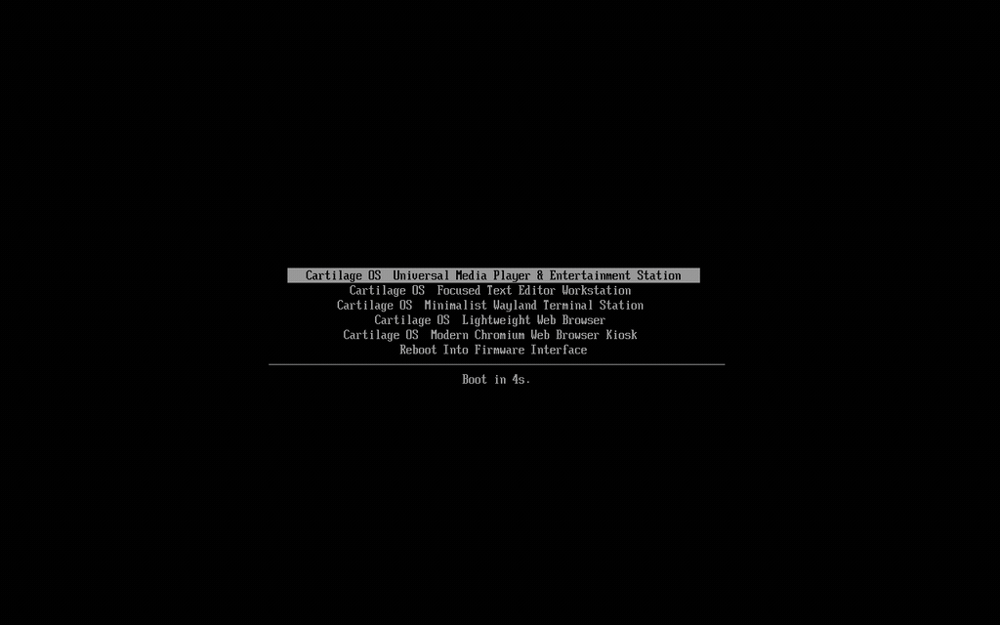
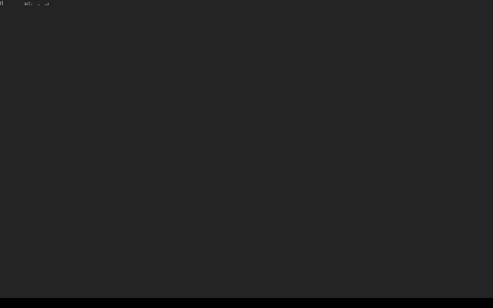

Operating systems were meant to serve software, not monopolize silicon. Cartilage compiles software into declarative, immutable EROFS appliances hosted on a single shared Linux kernel. Pull the plug. Kill PID 1. The machine cannot degrade.

Booting standard Windows 11 or bloated desktop Linux on everyday silicon is an exercise in agony. Over 80 background surveillance and telemetry daemons awaken to phone home before you launch a single process; 3 to 4 gigabytes of memory vanish instantly; and spinning platters thrash for minutes before drawing a cursor.
This relentless accumulation of dynamic registries, background update locks, and mutable package states has transformed millions of capable dual-core and quad-core laptops into artificial electronic landfill.
Cartilage OS discards the mutable desktop illusion. Just like inserting a physical cartridge into a Nintendo Game Boy, your computer boots straight into a single self-contained, read-only EROFS appliance. Every reboot starts factory-fresh from identical immutable blocks.
The rootfs is pure read-only EROFS. Run rm -rf --no-preserve-root / as root, kill critical processes, or physically yank the USB drive mid-operation. You cannot brick the system. Every reboot restores factory perfection. Persistent user state is strictly isolated to an ext4 partition on /data.
No brittle Dockerfiles or multi-step shell orchestrators. Your appliance is defined in 15 lines of plain YAML. Cartilage parses dependencies, stages the environment rootlessly, and compresses it directly into a kernel-mapped EROFS block image.
No systemd userspace targets. No Polkit. Zero background audio servers (no PulseAudio or PipeWire running inside appliances). Direct kernel DRM/KMS acceleration and universal ALSA dmix provide multi-stream hardware audio multiplexing with zero background overhead.

Hardware-accelerated Foot terminal on cage kiosk compositor. Distraction-free zen environment with persistent Git dotfiles and code on /data.
appliance: name: foot version: "1.0.0" runtime: engine: arch packages: [foot, cage, seatd] display: compositor: cage entrypoint: /usr/bin/foot storage: mode: persistent mount_point: /data
Physical cold-boot timings recorded via high-resolution monotonic kernel timestamps inside QEMU/KVM under identical hardware allocations (1024MB RAM, 2 Cores).
| APPLIANCE / SYSTEM | CORE ENGINE | COLD BOOT | IDLE MEMORY | ROOTFS IMMUTABILITY | CORRUPTION RISK |
|---|---|---|---|---|---|
| Cartilage Mousepad | Alpine musl | 2.1s | 57.6 MB | 100% Read-Only EROFS | ZERO (Stateless) |
| Cartilage Foot | Arch Linux | 1.8s | 85.0 MB | 100% Read-Only EROFS | ZERO (Stateless) |
| Cartilage VLC | Arch Linux | 2.8s | 340 MB | 100% Read-Only EROFS | ZERO (Stateless) |
| Ubuntu 24.04 LTS | glibc / systemd | 18.5s | 1,850 MB | Mutable ext4 | HIGH (State Drift) |
| Windows 11 Home | NT Kernel | 35.0s+ | 3,400 MB | Mutable NTFS | CRITICAL (Registry) |
Cartilage OS is maintained by a global open-source community. Adding an appliance requires no kernel code—just a 15-line YAML recipe. We have curated bite-sized Good First Issues and deep architectural RFCs waiting on GitHub.
EXPLORE 14 OPEN ROADMAP ISSUES →